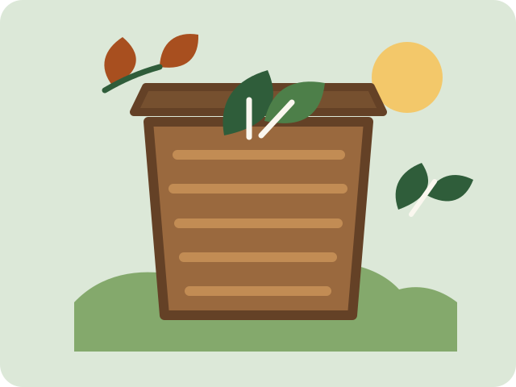

Choose a place
Pick a countertop caddy, outdoor tumbler, or open pile based on your space and how much material you collect.
Home composting for beginners
Composting can be simple. Choose a setup that fits your space, mix fresh scraps with dry materials, and give nature time to work.

A useful routine
A steady mix of ingredients, air, and moisture turns everyday kitchen and garden scraps into a useful soil amendment.
Pick a countertop caddy, outdoor tumbler, or open pile based on your space and how much material you collect.
Add nitrogen-rich food scraps with about two parts dry, carbon-rich material such as leaves or torn cardboard.
Keep the pile as damp as a wrung-out sponge. Loosen compacted material so air can move through it.
The simple balance
Fruit and vegetable scraps, coffee grounds, and fresh plant trimmings add moisture and nitrogen. Bury food scraps in the center to discourage pests.
See the green and brown materials guideDry leaves, plain shredded cardboard, and straw absorb extra moisture and create air pockets. Keep a dry supply beside your bin.
Learn what belongs in a compost binGood to know: Compost is ready when it is dark, crumbly, and smells earthy. Depending on the mix, weather, and turning routine, that can take several months.
Need a hand?
A sour smell often means the pile is too wet or compacted. Slow breakdown can mean it needs smaller pieces, moisture, or more greens.